- Introduction
- 1. Week 1
- 2. Week 2
- 3. Week 3
- 4. Week 4
- 5. Week 5
- 6. Week 6
- 7. Week 7
- 8. Week 8
- 9. Week 9
- 10. Week 10
- Published with GitBook
4.7 Exercises
library(ISLR)
Exercise 3
X <- seq(from = -4, to = +4, length.out = 500)
Y <- 1 + X - 2 * (X - 1)^2 * (X >= 1)
plot(X, Y, type = "l")
abline(v = 1, col = "red")
grid()
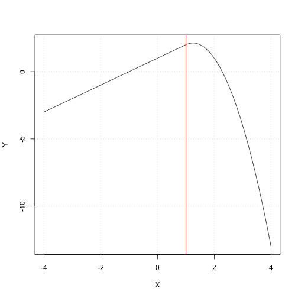
Exercise 4
X <- seq(from = -2, to = +8, length.out = 500)
# Compute some auxilary indicator functions:
I_1 <- (X >= 0) & (X <= 2)
I_2 <- (X >= 1) & (X <= 2)
I_3 <- (X >= 3) & (X <= 4)
I_4 <- (X >= 4) & (X <= 5)
Y <- 1 + (I_1 - (X - 1) * I_2) + 3 * ((X - 3) * I_3 + I_4)
plot(X, Y, type = "l")
grid()
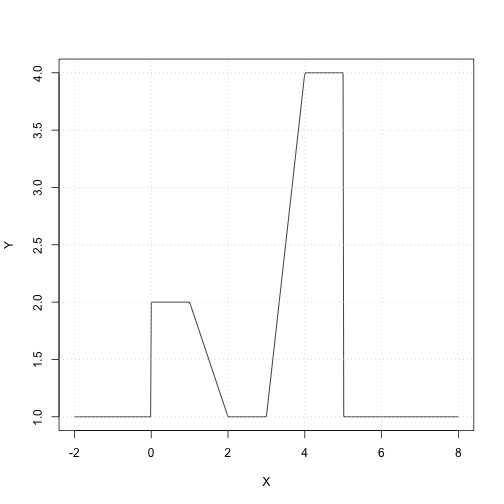
Exercise 6
library(boot)
set.seed(0)
# Plot the data to see what it looks like:
with(Wage, plot(age, wage))
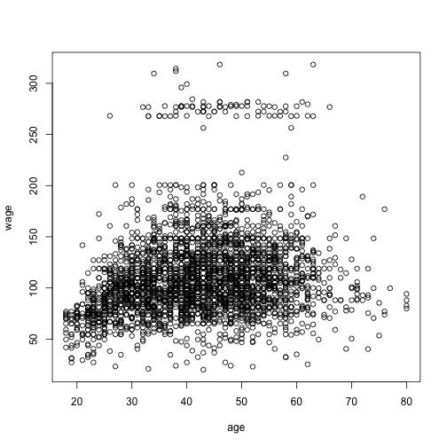
# Part (a):
# Perform polynomial regression for various polynomial degrees:
cv.error <- rep(0, 10)
for (i in 1:10) {
# fit polynomial models of various degrees (based on EPage 208 in the book)
glm.fit <- glm(wage ~ poly(age, i), data = Wage)
cv.error[i] <- cv.glm(Wage, glm.fit, K = 10)$delta[1]
}
plot(1:10, cv.error, pch = 19, type = "b", xlab = "degree of polynomial", ylab = "CV estimate of the prediction error")
grid()

# Using the minimal value for the CV error gives the value 10 which seems like too much polynomial i.e. too wiggly From the plot 4 is
# the point where the curve stops decreasing and starts increasing so we will consider polynomials of this degree.
me <- which.min(cv.error)
me <- 4
m <- glm(wage ~ poly(age, me), data = Wage)
plot(Wage$age, Wage$wage)
aRng <- range(Wage$age)
a_predict <- seq(from = aRng[1], to = aRng[2], length.out = 100)
w_predict <- predict(m, newdata = list(age = a_predict))
lines(a_predict, w_predict, col = "red")
# Lets consider the ANOVA approach (i.e. a sequence of nested linear models):
m0 <- lm(wage ~ 1, data = Wage)
m1 <- lm(wage ~ poly(age, 1), data = Wage)
m2 <- lm(wage ~ poly(age, 2), data = Wage)
m3 <- lm(wage ~ poly(age, 3), data = Wage)
m4 <- lm(wage ~ poly(age, 4), data = Wage)
m5 <- lm(wage ~ poly(age, 5), data = Wage)
anova(m0, m1, m2, m3, m4, m5)
| Res.Df | RSS | Df | Sum of Sq | F | Pr(>F) |
|---|---|---|---|---|---|
| 2999 | 5222086 | NA | NA | NA | NA |
| 2998 | 5022216 | 1 | 199869.665 | 125.4443235 | 0.0000000 |
| 2997 | 4793430 | 1 | 228786.010 | 143.5931074 | 0.0000000 |
| 2996 | 4777674 | 1 | 15755.694 | 9.8887559 | 0.0016792 |
| 2995 | 4771604 | 1 | 6070.152 | 3.8098134 | 0.0510462 |
| 2994 | 4770322 | 1 | 1282.563 | 0.8049758 | 0.3696820 |
# Part (b):
# Lets due the same thing with the cut function for fitting a piecewise constant model: For some reason the command cv.glm does not
# work when we use the 'cut' command. I think it was how I formed the cut factors the first time i.e. not taking bins when some of
# the testing data was outside of the training data. To debug this and understand what is going on we will do cross-validation by
# hand. See EPage 265 in the book on some more information on how to do cross-validation in R.
number_of_bins <- c(2, 3, 4, 5, 10)
nc <- length(number_of_bins)
k <- 10
folds <- sample(1:k, nrow(Wage), replace = TRUE)
cv.errors <- matrix(NA, k, nc)
# Prepare for the type of factors you might obtain (extend the age range a bit):
age_range <- range(Wage$age)
age_range[1] <- age_range[1] - 1
age_range[2] <- age_range[2] + 1
for (ci in 1:nc) {
# for each number of cuts to test
nob <- number_of_bins[ci] # n(umber) o(f) c(uts) 2, 3, 4 ...
for (fi in 1:k) {
# for each fold
# In this ugly command we: break the 'age' variable in the subset of data Wage[folds!=fi,] into 'nob' bins that span between the
# smallest and largest values of age observed over the entire dataset. This allows us to be able to use the function 'predict' on
# age values not seen in the training subset. If we try to 'cut' the age variable into bins that are too small they may not contain
# any ages in them. I'm not sure that lm/glm would be doing something reasonable in that case. Thus I only do cross-validation on a
# smallish number of bins.
fit <- glm(wage ~ cut(age, breaks = seq(from = age_range[1], to = age_range[2], length.out = (nob + 1))), data = Wage[folds !=
fi, ])
y_hat <- predict(fit, newdata = Wage[folds == fi, ])
cv.errors[fi, ci] <- mean((Wage[folds == fi, ]$wage - y_hat)^2)
}
}
cv.errors.mean <- apply(cv.errors, 2, mean)
cv.errors.stderr <- apply(cv.errors, 2, sd)/sqrt(k)
min.cv.index <- which.min(cv.errors.mean)
one_se_up_value <- (cv.errors.mean + cv.errors.stderr)[min.cv.index]
plot(number_of_bins, cv.errors.mean, pch = 19, type = "b", xlab = "number of cut bins", ylab = "CV estimate of the prediction error")
lines(number_of_bins, cv.errors.mean - cv.errors.stderr, lty = "dashed")
lines(number_of_bins, cv.errors.mean + cv.errors.stderr, lty = "dashed")
abline(h = one_se_up_value, col = "red")
grid()
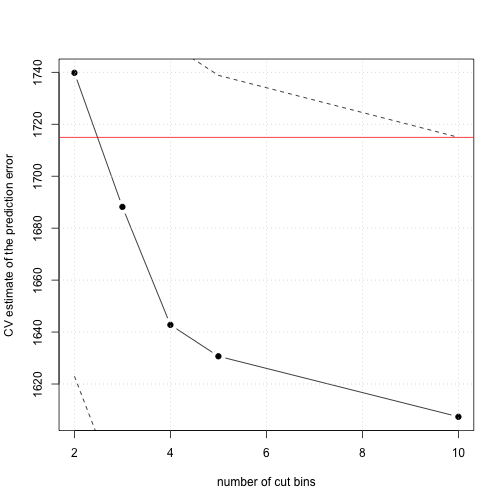
# Fit the optimal model using all data:
nob <- 3
fit <- glm(wage ~ cut(age, breaks = seq(from = age_range[1], to = age_range[2], length.out = (nob + 1))), data = Wage)
plot(Wage$age, Wage$wage)
aRng <- range(Wage$age)
a_predict <- seq(from = aRng[1], to = aRng[2], length.out = 100)
w_predict <- predict(fit, newdata = list(age = a_predict))
lines(a_predict, w_predict, col = "red", lw = 4)
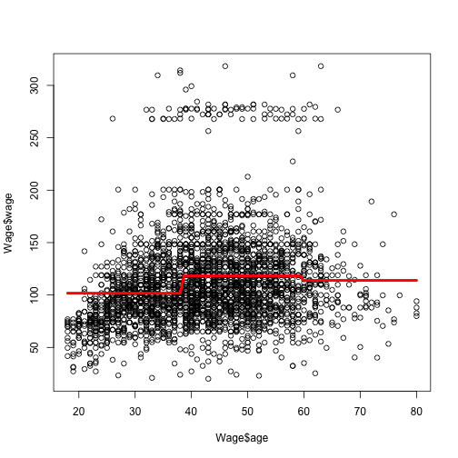
Exercise 9
library(MASS)
library(splines)
set.seed(0)
# Part (a):
m <- lm(nox ~ poly(dis, 3), data = Boston)
plot(Boston$dis, Boston$nox, xlab = "dis", ylab = "nox", main = "third degree polynomial fit")
dis_range <- range(Boston$dis)
dis_samples <- seq(from = dis_range[1], to = dis_range[2], length.out = 100)
y_hat <- predict(m, newdata = list(dis = dis_samples))
lines(dis_samples, y_hat, col = "red")
grid()
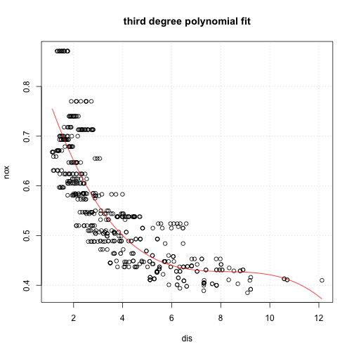
# Part (b-c):
d_max <- 10
# The training RSS:
training_rss <- rep(NA, d_max)
for (d in 1:d_max) {
m <- lm(nox ~ poly(dis, d), data = Boston)
training_rss[d] <- sum((m$residuals)^2)
}
# The RSS estimated using cross-validation:
k <- 10
folds <- sample(1:k, nrow(Boston), replace = TRUE)
cv.rss.test <- matrix(NA, k, d_max)
cv.rss.train <- matrix(NA, k, d_max)
for (d in 1:d_max) {
for (fi in 1:k) {
# for each fold
fit <- lm(nox ~ poly(dis, d), data = Boston[folds != fi, ])
y_hat <- predict(fit, newdata = Boston[folds != fi, ])
cv.rss.train[fi, d] <- sum((Boston[folds != fi, ]$nox - y_hat)^2)
y_hat <- predict(fit, newdata = Boston[folds == fi, ])
cv.rss.test[fi, d] <- sum((Boston[folds == fi, ]$nox - y_hat)^2)
}
}
cv.rss.train.mean <- apply(cv.rss.train, 2, mean)
cv.rss.train.stderr <- apply(cv.rss.train, 2, sd)/sqrt(k)
cv.rss.test.mean <- apply(cv.rss.test, 2, mean)
cv.rss.test.stderr <- apply(cv.rss.test, 2, sd)/sqrt(k)
min_value <- min(c(cv.rss.test.mean, cv.rss.train.mean))
max_value <- max(c(cv.rss.test.mean, cv.rss.train.mean))
plot(1:d_max, cv.rss.train.mean, xlab = "polynomial degree", ylab = "RSS", col = "red", pch = 19, type = "b", ylim = c(min_value, max_value))
lines(1:d_max, cv.rss.test.mean, col = "green", pch = 19, type = "b")
grid()
legend("topright", legend = c("train RSS", "test RSS"), col = c("red", "green"), lty = 1, lwd = 2)
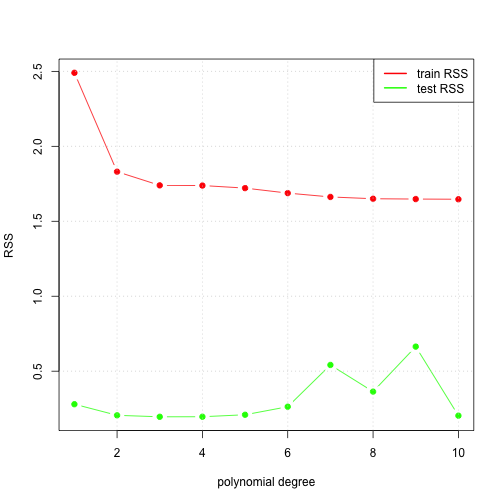
# Part (d-f):
m <- lm(nox ~ bs(dis, df = 4), data = Boston)
plot(Boston$dis, Boston$nox, xlab = "dis", ylab = "nox", main = "bs with df=4 fit")
dis_range <- range(Boston$dis)
dis_samples <- seq(from = dis_range[1], to = dis_range[2], length.out = 100)
y_hat <- predict(m, newdata = list(dis = dis_samples))
lines(dis_samples, y_hat, col = "red")
grid()
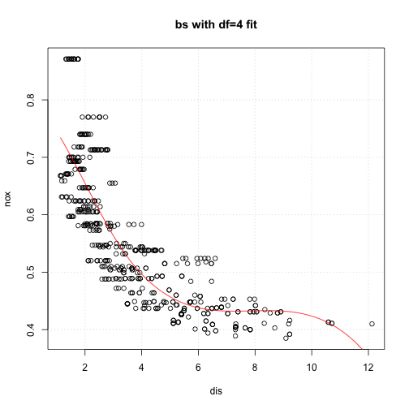
dof_choices <- c(3, 4, 5, 10, 15, 20)
n_dof_choices <- length(dof_choices)
# The RSS estimated using cross-validation:
k <- 5
folds <- sample(1:k, nrow(Boston), replace = TRUE)
cv.rss.test <- matrix(NA, k, n_dof_choices)
cv.rss.train <- matrix(NA, k, n_dof_choices)
for (di in 1:n_dof_choices) {
for (fi in 1:k) {
# for each fold
fit <- lm(nox ~ bs(dis, df = dof_choices[di]), data = Boston[folds != fi, ])
y_hat <- predict(fit, newdata = Boston[folds != fi, ])
cv.rss.train[fi, di] <- sum((Boston[folds != fi, ]$nox - y_hat)^2)
y_hat <- predict(fit, newdata = Boston[folds == fi, ])
cv.rss.test[fi, di] <- sum((Boston[folds == fi, ]$nox - y_hat)^2)
}
}
## Warning in bs(dis, degree = 3L, knots = numeric(0), Boundary.knots =
## c(1.1296, : some 'x' values beyond boundary knots may cause ill-conditioned
## bases
## Warning in bs(dis, degree = 3L, knots = numeric(0), Boundary.knots =
## c(1.137, : some 'x' values beyond boundary knots may cause ill-conditioned
## bases
## Warning in bs(dis, degree = 3L, knots = structure(3.2721, .Names =
## "50%"), : some 'x' values beyond boundary knots may cause ill-conditioned
## bases
## Warning in bs(dis, degree = 3L, knots = structure(3.1121, .Names =
## "50%"), : some 'x' values beyond boundary knots may cause ill-conditioned
## bases
## Warning in bs(dis, degree = 3L, knots = structure(c(2.39256666666667,
## 4.3549: some 'x' values beyond boundary knots may cause ill-conditioned
## bases
## Warning in bs(dis, degree = 3L, knots = structure(c(2.3546,
## 4.23906666666667: some 'x' values beyond boundary knots may cause ill-
## conditioned bases
## Warning in bs(dis, degree = 3L, knots = structure(c(1.74615, 2.08285,
## 2.50505, : some 'x' values beyond boundary knots may cause ill-conditioned
## bases
## Warning in bs(dis, degree = 3L, knots = structure(c(1.730175, 2.06855,
## 2.49145, : some 'x' values beyond boundary knots may cause ill-conditioned
## bases
## Warning in bs(dis, degree = 3L, knots = structure(c(1.55856153846154,
## 1.81466923076923, : some 'x' values beyond boundary knots may cause ill-
## conditioned bases
## Warning in bs(dis, degree = 3L, knots = structure(c(1.56477692307692,
## 1.79141538461538, : some 'x' values beyond boundary knots may cause ill-
## conditioned bases
## Warning in bs(dis, degree = 3L, knots = structure(c(1.47964444444444,
## 1.65936666666667, : some 'x' values beyond boundary knots may cause ill-
## conditioned bases
## Warning in bs(dis, degree = 3L, knots = structure(c(1.48462222222222,
## 1.66397777777778, : some 'x' values beyond boundary knots may cause ill-
## conditioned bases
cv.rss.train.mean <- apply(cv.rss.train, 2, mean)
cv.rss.train.stderr <- apply(cv.rss.train, 2, sd)/sqrt(k)
cv.rss.test.mean <- apply(cv.rss.test, 2, mean)
cv.rss.test.stderr <- apply(cv.rss.test, 2, sd)/sqrt(k)
min_value <- min(c(cv.rss.test.mean, cv.rss.train.mean))
max_value <- max(c(cv.rss.test.mean, cv.rss.train.mean))
plot(dof_choices, cv.rss.train.mean, xlab = "spline d.o.f.", ylab = "RSS", col = "red", pch = 19, type = "b", ylim = c(min_value, max_value))
lines(dof_choices, cv.rss.test.mean, col = "green", pch = 19, type = "b")
grid()
legend("topright", legend = c("train RSS", "test RSS"), col = c("red", "green"), lty = 1, lwd = 2)
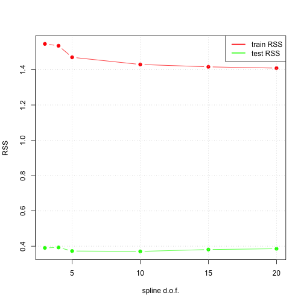
Exercise 10
library("leaps")
library("glmnet")
library("gam")
set.seed(0)
# Part (a):
# Divide the dataset into three parts: training==1, validation==2, and test==3
dataset_part <- sample(1:3, nrow(College), replace = T, prob = c(0.5, 0.25, 0.25))
p <- ncol(College) - 1
# Fit subsets of various sizes:
regfit.forward <- regsubsets(Outstate ~ ., data = College[dataset_part == 1, ], nvmax = p, method = "forward")
print(summary(regfit.forward))
## Subset selection object
## Call: eval(expr, envir, enclos)
## 17 Variables (and intercept)
## Forced in Forced out
## PrivateYes FALSE FALSE
## Apps FALSE FALSE
## Accept FALSE FALSE
## Enroll FALSE FALSE
## Top10perc FALSE FALSE
## Top25perc FALSE FALSE
## F.Undergrad FALSE FALSE
## P.Undergrad FALSE FALSE
## Room.Board FALSE FALSE
## Books FALSE FALSE
## Personal FALSE FALSE
## PhD FALSE FALSE
## Terminal FALSE FALSE
## S.F.Ratio FALSE FALSE
## perc.alumni FALSE FALSE
## Expend FALSE FALSE
## Grad.Rate FALSE FALSE
## 1 subsets of each size up to 17
## Selection Algorithm: forward
## PrivateYes Apps Accept Enroll Top10perc Top25perc F.Undergrad
## 1 ( 1 ) " " " " " " " " " " " " " "
## 2 ( 1 ) "*" " " " " " " " " " " " "
## 3 ( 1 ) "*" " " " " " " " " " " " "
## 4 ( 1 ) "*" " " " " " " " " " " " "
## 5 ( 1 ) "*" " " " " " " " " " " " "
## 6 ( 1 ) "*" " " " " " " " " " " " "
## 7 ( 1 ) "*" " " " " " " " " " " " "
## 8 ( 1 ) "*" " " " " " " " " " " " "
## 9 ( 1 ) "*" " " "*" " " " " " " " "
## 10 ( 1 ) "*" " " "*" "*" " " " " " "
## 11 ( 1 ) "*" "*" "*" "*" " " " " " "
## 12 ( 1 ) "*" "*" "*" "*" "*" " " " "
## 13 ( 1 ) "*" "*" "*" "*" "*" "*" " "
## 14 ( 1 ) "*" "*" "*" "*" "*" "*" " "
## 15 ( 1 ) "*" "*" "*" "*" "*" "*" "*"
## 16 ( 1 ) "*" "*" "*" "*" "*" "*" "*"
## 17 ( 1 ) "*" "*" "*" "*" "*" "*" "*"
## P.Undergrad Room.Board Books Personal PhD Terminal S.F.Ratio
## 1 ( 1 ) " " " " " " " " " " " " " "
## 2 ( 1 ) " " " " " " " " " " " " " "
## 3 ( 1 ) " " "*" " " " " " " " " " "
## 4 ( 1 ) " " "*" " " " " " " " " " "
## 5 ( 1 ) " " "*" " " " " " " "*" " "
## 6 ( 1 ) " " "*" " " " " " " "*" " "
## 7 ( 1 ) " " "*" " " "*" " " "*" " "
## 8 ( 1 ) " " "*" " " "*" " " "*" "*"
## 9 ( 1 ) " " "*" " " "*" " " "*" "*"
## 10 ( 1 ) " " "*" " " "*" " " "*" "*"
## 11 ( 1 ) " " "*" " " "*" " " "*" "*"
## 12 ( 1 ) " " "*" " " "*" " " "*" "*"
## 13 ( 1 ) " " "*" " " "*" " " "*" "*"
## 14 ( 1 ) "*" "*" " " "*" " " "*" "*"
## 15 ( 1 ) "*" "*" " " "*" " " "*" "*"
## 16 ( 1 ) "*" "*" "*" "*" " " "*" "*"
## 17 ( 1 ) "*" "*" "*" "*" "*" "*" "*"
## perc.alumni Expend Grad.Rate
## 1 ( 1 ) " " "*" " "
## 2 ( 1 ) " " "*" " "
## 3 ( 1 ) " " "*" " "
## 4 ( 1 ) " " "*" "*"
## 5 ( 1 ) " " "*" "*"
## 6 ( 1 ) "*" "*" "*"
## 7 ( 1 ) "*" "*" "*"
## 8 ( 1 ) "*" "*" "*"
## 9 ( 1 ) "*" "*" "*"
## 10 ( 1 ) "*" "*" "*"
## 11 ( 1 ) "*" "*" "*"
## 12 ( 1 ) "*" "*" "*"
## 13 ( 1 ) "*" "*" "*"
## 14 ( 1 ) "*" "*" "*"
## 15 ( 1 ) "*" "*" "*"
## 16 ( 1 ) "*" "*" "*"
## 17 ( 1 ) "*" "*" "*"
reg.summary <- summary(regfit.forward)
# Test the trained models on the validation set:
validation.mat <- model.matrix(Outstate ~ ., data = College[dataset_part == 2, ])
val.errors <- rep(NA, p)
for (ii in 1:p) {
coefi <- coef(regfit.forward, id = ii)
pred <- validation.mat[, names(coefi)] %*% coefi
val.errors[ii] <- mean((College$Outstate[dataset_part == 2] - pred)^2)
}
forward selection validation errors 9.662181 × 106, 7.3196979 × 106, 5.5952072 × 106, 4.9324268 × 106, 4.5162583 × 106, 4.2393923 × 106, 4.238819 × 106, 4.1866923 × 106, 4.1429586 × 106, 4.5589137 × 106, 4.337677 × 106, 4.1818769 × 106, 4.199016 × 106, 4.204663 × 106, 4.2044632 × 106, 4.2007718 × 106, 4.20792 × 106
k <- which.min(val.errors)
smallest validation error for index= 9, with coefficients given by:
coef(regfit.forward, id = k)
## (Intercept) PrivateYes Accept Room.Board Personal
## -3.423831e+03 2.852109e+03 7.135054e-02 9.408533e-01 -4.539620e-01
## Terminal S.F.Ratio perc.alumni Expend Grad.Rate
## 4.480521e+01 -4.828169e+01 3.085511e+01 2.249079e-01 3.535524e+01
plot(val.errors, xlab = "Number of variables", ylab = "Validation MSE", pch = 19, type = "b")
abline(v = k, col = "red")
grid()
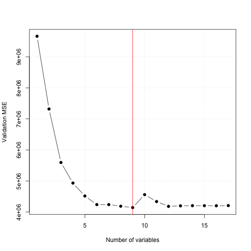
# Predict the best model found on the testing set:
test.mat <- model.matrix(Outstate ~ ., data = College[dataset_part == 3, ])
coefi <- coef(regfit.forward, id = k)
pred <- test.mat[, names(coefi)] %*% coefi
test.error <- mean((College$Outstate[dataset_part == 3] - pred)^2)
test error on the optimal subset {r test.error}
k <- 3
coefi <- coef(regfit.forward, id = k)
pred <- test.mat[, names(coefi)] %*% coefi
test.error <- mean((College$Outstate[dataset_part == 3] - pred)^2)
test error on k=3 subset {r test.error}
# Part (b):
# Combine the training and validation into one 'training' dataset
dataset_part[dataset_part == 2] <- 1
dataset_part[dataset_part == 3] <- 2
gam.model <- gam(Outstate ~ s(Expend, 4) + s(Room.Board, 4) + Private, data = College[dataset_part == 1, ])
par(mfrow = c(1, 3))
plot(gam.model, se = TRUE, col = "blue")
## Error in 1:object$nsdf: argument of length 0
par(mfrow = c(1, 1))
# Predict the GAM performance on the test dataset:
y_hat <- predict(gam.model, newdata = College[dataset_part == 2, ])
MSE <- mean((College[dataset_part == 2, ]$Outstate - y_hat)^2)
gam testing set (MSE) error 4.5701599 × 106
Exercise 11
set.seed(0)
n <- 100
X1 <- rnorm(n)
X2 <- rnorm(n)
# the true values of beta_i:
beta_0 <- 3
beta_1 <- 5
beta_2 <- -0.2
Y <- beta_0 + beta_1 * X1 + beta_2 * X2 + 0.1 * rnorm(n)
# Part (b):
beta_1_hat <- -3
n_iters <- 10
beta_0_estimates <- c()
beta_1_estimates <- c()
beta_2_estimates <- c()
for (ii in 1:n_iters) {
a <- Y - beta_1_hat * X1
beta_2_hat <- lm(a ~ X2)$coef[2]
a <- Y - beta_2_hat * X2
m <- lm(a ~ X1)
beta_1_hat <- m$coef[2]
beta_0_hat <- m$coef[1]
beta_0_estimates <- c(beta_0_estimates, beta_0_hat)
beta_1_estimates <- c(beta_1_estimates, beta_1_hat)
beta_2_estimates <- c(beta_2_estimates, beta_2_hat)
}
# Get the coefficient estimates using lm:
m <- lm(Y ~ X1 + X2)
old_par <- par(mfrow = c(1, 3))
plot(1:n_iters, beta_0_estimates, main = "beta_0", pch = 19, ylim = c(beta_0 * 0.999, max(beta_0_estimates)))
abline(h = beta_0, col = "green", lwd = 4)
abline(h = m$coefficients[1], col = "gray", lwd = 4)
grid()
plot(1:n_iters, beta_1_estimates, main = "beta_1", pch = 19)
abline(h = beta_1, col = "green", lwd = 4)
abline(h = m$coefficients[2], col = "gray", lwd = 4)
grid()
plot(1:n_iters, beta_2_estimates, main = "beta_2", pch = 19)
abline(h = beta_2, col = "green", lwd = 4)
abline(h = m$coefficients[3], col = "gray", lwd = 4)
grid()
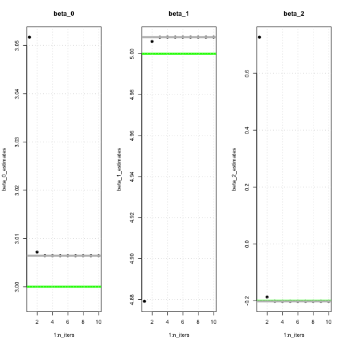
Exercise 12
set.seed(0)
p <- 100
n <- 1000
# Generate some regression coefficients beta_0, beta_1, ..., beta_p
beta_truth <- rnorm(p + 1)
# Generate some data (append a column of ones):
Xs <- c(rep(1, n), rnorm(n * p))
X <- matrix(data = Xs, nrow = n, ncol = (p + 1), byrow = FALSE)
# Produce the response:
Y <- X %*% beta_truth + 0.1 * rnorm(n)
# Get the true estimated coefficient estimates using lm:
m <- lm(Y ~ X - 1)
beta_lm <- m$coeff
# Estimate beta_i using backfitting:
beta_hat <- rnorm(p + 1) # initial estimate of beta's is taken to be random
n_iters <- 10
beta_estimates <- matrix(data = rep(NA, n_iters * (p + 1)), nrow = n_iters, ncol = (p + 1))
beta_differences_with_truth <- rep(NA, n_iters)
beta_differences_with_LS <- rep(NA, n_iters)
for (ii in 1:n_iters) {
for (pi in 0:p) {
# for beta_0, beta_1, ... beta_pi ... beta_p
# Perform simple linear regression on the variable X_pi (assuming we know all other values of beta_pi):
a <- Y - X[, -(pi + 1)] %*% beta_hat[-(pi + 1)] # remove all predictors except beta_0
if (pi == 0) {
m <- lm(a ~ 1) # estimate a constant
beta_hat[pi + 1] <- m$coef[1]
} else {
m <- lm(a ~ X[, pi + 1]) # estimate the slope on X_pi
beta_hat[pi + 1] <- m$coef[2]
}
}
beta_estimates[ii, ] <- beta_hat
beta_differences_with_truth[ii] <- sqrt(sum((beta_hat - beta_truth)^2))
beta_differences_with_LS[ii] <- sqrt(sum((beta_hat - beta_lm)^2))
}
plot(1:n_iters, beta_differences_with_LS, main = "||beta_truth-beta_LS||_2", pch = 19, type = "b")
grid()
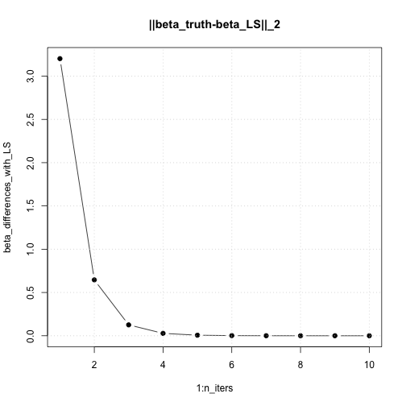